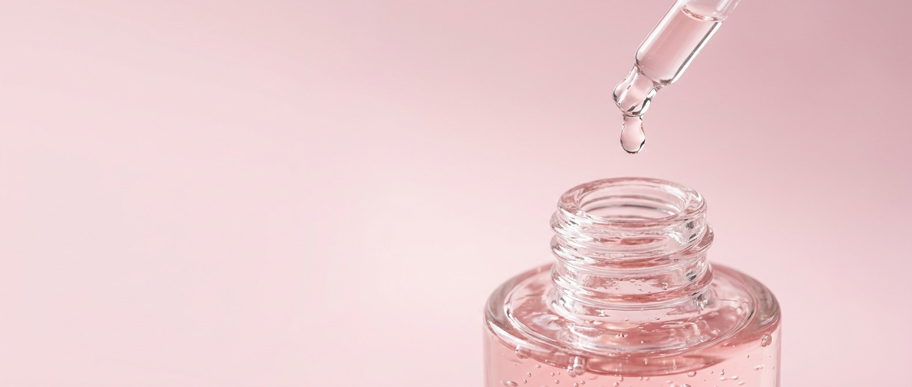

Kyami: from a skincare idea to a scroll-driven launch page
A launch page for Kyami, a fictional Japanese skincare brand for people in their twenties, and its Rice & Sakura Glow Serum. I art directed the brand and the AI imagery, then built the page with Claude: a scroll story with a 3D bottle that turns as you read.
- Role
- Art direction, AI image creation, UI design and front-end build
- For
- A fictional brand, made to show a product launch from first idea to live page
- Tools
- Figma AI, Weave, Claude, HTML/CSS, three.js
- Output
- A live launch page, 11 AI images and a real-time 3D bottle
The pain point
A beauty launch needs the same product in every frame
Skincare sells on detail: the bottle, the texture, the skin. Generative AI can make each of those in seconds, but it redraws the product every time. And a page that only stacks images does not feel like a launch.
One bottle, every shot
A bottle that changes shape from one image to the next breaks trust in the product straight away.
Japanese, not Korean, and young
The brand needed its own world: rice and sakura, made light and fresh for people in their twenties.
A page that feels like a launch
Big product moments and scroll-led scenes, the way premium launches are presented.
The live launch page
Fictional brand. Kyami is not a real company. Every image on the page is AI-generated, and every figure in its results section is an example.
The look
Colours sampled from a real sakura branch: paper white, petal pinks, the crimson at the heart of each blossom, and a deep berry stage for the bottle.
The imagery
Product, texture, ingredients, a recurring model and lifestyle, all generated with AI and art directed as one campaign.




How it came together
One bottle, kept simple
The first faceted bottle came out slightly different in every AI image. I switched to a plain round bottle with no label and used the same written description in every prompt, so it stays recognisable across the set.
3D where photos fall short
For the bottle that turns, I built a real-time 3D model with three.js: translucent serum, a ribbed dropper, a shadow cast on the page and spec lines that follow each part as it turns.
What was delivered
A live launch page
A scroll story: the hero opens out, a close-up, the 3D bottle, falling bottles, ingredients, results, the ritual and a shop block.
11 AI images
Product, close-up, texture, ingredient, model and lifestyle shots, plus three cut-out pieces for the falling scene.
A real-time 3D bottle
Rendered in the browser with three.js, so the bottle stays identical from every angle.
Problem solved
A product that stays the same in every frame, a brand with its own world, and a page you scroll through like a launch.
The same bottle throughout
A simple bottle, described the same way in every prompt, and a 3D model wherever it has to turn.
A brand with its own world
Rice, sakura and a young, light palette, with Japanese characters as details instead of clichés.
A launch you scroll through
Scenes open, turn and fall as you scroll, so the product carries the story.